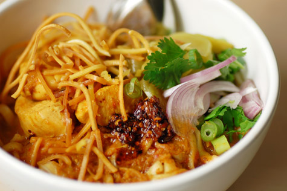

Curried Noodle Soup with Chicken
Northern Thai Curried Noodle Soup with Chicken is a soup-like dish made with a mix of deep-fried crispy egg noodles and boiled egg noodles, pickled mustard greens, shallots, lime, ground chillies fried in oil, and meat in a curry-like sauce containing coconut milk. Curried Noodle Soup with Chicken — a curry-based soup whose main components are noodles, both crunchy and not crunchy, meat, cilantro and coconut milk — is easily Chiang Mai’s most digestible export and most famous dish.
Ingredients
Curry Paste
- 4 Tablespoons red curry paste
- 4 Tablespoons ginger
- 1 Tablespoon tumeric
- 1 teaspoon curry powder
- 1 teaspoon coriander seeds
- 1 teaspoon black cardamom seeds
Roast Chili Sauce
- 1/4 cup oil
- 2 Tablespoons shallots
- 1 Tablespoon garlic
- 12 dried red Thai chilis
Curry Soup
- Curried Noodle Soup with Chicken curry paste
- 4 chicken drumsticks
- 2 and 1/2 cups coconut milk
- 2 cups chicken broth
- 2 cups water
- 1 Tablespoon thin soy sauce
- 1 Tablespoon dark soy sauce
- 16 ounces fresh egg noodles
- 1 Tablespoon palm sugar
Accompaniments
- 1/4 cup shallots, finely sliced
- 1/4 cup preserved sour mustard green, sliced
- 1-2 limes, sliced
- Roast chili sauce
- A few stalks cilantro
Recipe Instructions
- Place chili, shallots, garlic, lemongrass, lime zest, turmeric, ginger, cilantro stalks, coriander seed, and cardamom in the center of a 12- by 12-inch square of heavy duty aluminum foil. Gather edges up to make a tight pouch. Place pouch directly over the flame of a gas burner and cook, turning occasionally, until aromatic and wisps of smoke begin to rise, about 8 minutes. If no gas burner is available, place the pouch in the bottom of a wok or cast iron skillet and heat over high heat, turning occasionally, until smoky, about 10 minutes. Allow contents to cool slightly and transfer to a large mortar and pestle.
- Add a large pinch of salt to the aromatics. Pound until a very fine paste is formed, about 10 minutes. Add shrimp paste and pound to incorporate. Set curry paste mixture aside.
- Separate out 1/4 of the noodles (enough noodles to make a crispy fried-noodle topping for 4 bowls) and set the remaining noodles aside. Heat vegetable oil in a large wok over high heat until shimmering. Working in batches, add noodles to oil and fry, stirring and flipping until golden brown and crisp. Transfer to a paper towel-lined plate. Season with salt and set aside.
- Discard all but 1 tablespoon oil from wok. Using a spoon, skim 2 tablespoons of creamy fat off the top of the coconut milk and add to the wok. Heat wok over high heat and cook, stirring constantly, until coconut milk breaks and oil begins to lightly smoke, about 2 minutes. Add curry paste mixture and cook, stirring and smearing the paste into the oil, until aromatic, about 45 seconds.
- Slowly whisk in the coconut milk, followed by the chicken stock and palm sugar. Add chicken legs and bring to a simmer. Cook, turning chicken occasionally, until chicken is tender and broth is very flavorful, about 30 minutes. Season to taste with fish sauce.
- Bring a pot of salted water to a boil. Add remaining uncooked noodles and cook until al dente, about 1 minute. Drain noodles and divide between four warmed bowls. Top noodles with two pieces of chicken. Divide broth evenly between bowls. Top with fried noodles and serve immediately with sliced shallots, lime wedges, and pickled mustard greens on the side.

All Rights Reserved